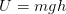
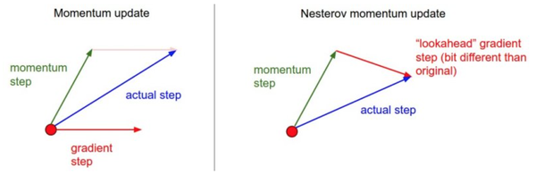
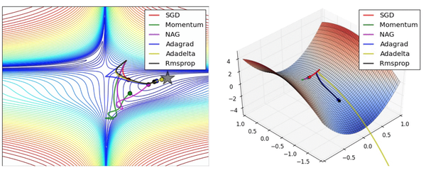

内容列表：
- 梯度检查
- 合理性（Sanity）检查
- 检查学习过程
- 损失函数
- 训练与验证准确率
- 权重：更新比例
- 每层的激活数据与梯度分布
- 可视化
- 参数更新 译者注：下篇翻译起始处
- 一阶（随机梯度下降）方法，动量方法，Nesterov动量方法
- 学习率退火
- 二阶方法
- 逐参数适应学习率方法（Adagrad，RMSProp）
- 超参数调优
- 评价
- 模型集成
- 总结
- 拓展引用
参数更新
一旦能使用反向传播计算解析梯度，梯度就能被用来进行参数更新了。进行参数更新有好几种方法，接下来都会进行讨论。
深度网络的最优化是现在非常活跃的研究领域。本节将重点介绍一些公认有效的常用的技巧，这些技巧都是在实践中会遇到的。我们将简要介绍这些技巧的直观概念，但不进行细节分析。对于细节感兴趣的读者，我们提供了一些拓展阅读。
随机梯度下降及各种更新方法
普通更新。最简单的更新形式是沿着负梯度方向改变参数（因为梯度指向的是上升方向，但是我们通常希望最小化损失函数）。假设有一个参数向量x及其梯度dx，那么最简单的更新的形式是：
# 普通更新x += - learning_rate * dx动量（Momentum）更新是另一个方法，这个方法在深度网络上几乎总能得到更好的收敛速度。该方法可以看成是从物理角度上对于最优化问题得到的启发。损失值可以理解为是山的高度（因此高度势能是，所以有 ）。用随机数字初始化参数等同于在某个位置给质点设定初始速度为0。这样最优化过程可以看做是模拟参数向量（即质点）在地形上滚动的过程。
）。用随机数字初始化参数等同于在某个位置给质点设定初始速度为0。这样最优化过程可以看做是模拟参数向量（即质点）在地形上滚动的过程。
因为作用于质点的力与梯度的潜在能量（ ）有关，质点所受的力就是损失函数的（负）梯度。还有，因为
）有关，质点所受的力就是损失函数的（负）梯度。还有，因为 ，所以在这个观点下（负）梯度与质点的加速度是成比例的。注意这个理解和上面的随机梯度下降（SDG）是不同的，在普通版本中，梯度直接影响位置。而在这个版本的更新中，物理观点建议梯度只是影响速度，然后速度再影响位置：
，所以在这个观点下（负）梯度与质点的加速度是成比例的。注意这个理解和上面的随机梯度下降（SDG）是不同的，在普通版本中，梯度直接影响位置。而在这个版本的更新中，物理观点建议梯度只是影响速度，然后速度再影响位置：
# 动量更新v = mu * v - learning_rate * dx # 与速度融合x += v # 与位置融合在这里引入了一个初始化为0的变量v和一个超参数mu。说得不恰当一点，这个变量（mu）在最优化的过程中被看做动量（一般值设为0.9），但其物理意义与摩擦系数更一致。这个变量有效地抑制了速度，降低了系统的动能，不然质点在山底永远不会停下来。通过交叉验证，这个参数通常设为[0.5,0.9,0.95,0.99]中的一个。和学习率随着时间退火（下文有讨论）类似，动量随时间变化的设置有时能略微改善最优化的效果，其中动量在学习过程的后阶段会上升。一个典型的设置是刚开始将动量设为0.5而在后面的多个周期（epoch）中慢慢提升到0.99。
通过动量更新，参数向量会在任何有持续梯度的方向上增加速度。
Nesterov动量与普通动量有些许不同，最近变得比较流行。在理论上对于凸函数它能得到更好的收敛，在实践中也确实比标准动量表现更好一些。
Nesterov动量的核心思路是，当参数向量位于某个位置x时，观察上面的动量更新公式可以发现，动量部分（忽视带梯度的第二个部分）会通过mu * v稍微改变参数向量。因此，如果要计算梯度，那么可以将未来的近似位置x + mu * v看做是“向前看”，这个点在我们一会儿要停止的位置附近。因此，计算x + mu * v的梯度而不是“旧”位置x的梯度就有意义了。
————————————————————————————————————————
Nesterov动量。既然我们知道动量将会把我们带到绿色箭头指向的点，我们就不要在原点（红色点）那里计算梯度了。使用Nesterov动量，我们就在这个“向前看”的地方计算梯度。
————————————————————————————————————————
x_ahead = x + mu * v# 计算dx_ahead(在x_ahead处的梯度，而不是在x处的梯度)v = mu * v - learning_rate * dx_aheadx += v然而在实践中，人们更喜欢和普通SGD或上面的动量方法一样简单的表达式。通过对x_ahead = x + mu * v使用变量变换进行改写是可以做到的，然后用x_ahead而不是x来表示上面的更新。也就是说，实际存储的参数向量总是向前一步的那个版本。x_ahead的公式（将其重新命名为x）就变成了：
v_prev = v # 存储备份v = mu * v - learning_rate * dx # 速度更新保持不变x += -mu * v_prev + (1 + mu) * v # 位置更新变了形式对于NAG（Nesterov's Accelerated Momentum）的来源和数学公式推导，我们推荐以下的拓展阅读：
- Yoshua Bengio的Advances in optimizing Recurrent Networks，Section 3.5。
- Ilya Sutskever's thesis (pdf)在section 7.2对于这个主题有更详尽的阐述。
学习率退火
在训练深度网络的时候，让学习率随着时间退火通常是有帮助的。可以这样理解：如果学习率很高，系统的动能就过大，参数向量就会无规律地跳动，不能够稳定到损失函数更深更窄的部分去。知道什么时候开始衰减学习率是有技巧的：慢慢减小它，可能在很长时间内只能是浪费计算资源地看着它混沌地跳动，实际进展很少。但如果快速地减少它，系统可能过快地失去能量，不能到达原本可以到达的最好位置。通常，实现学习率退火有3种方式：
- 随步数衰减：每进行几个周期就根据一些因素降低学习率。典型的值是每过5个周期就将学习率减少一半，或者每20个周期减少到之前的0.1。这些数值的设定是严重依赖具体问题和模型的选择的。在实践中可能看见这么一种经验做法：使用一个固定的学习率来进行训练的同时观察验证集错误率，每当验证集错误率停止下降，就乘以一个常数（比如0.5）来降低学习率。
- 指数衰减。数学公式是
 ，其中
，其中 是超参数，
是超参数， 是迭代次数（也可以使用周期作为单位）。
是迭代次数（也可以使用周期作为单位）。 - 1/t衰减的数学公式是
 ，其中
，其中 是超参数，t是迭代次数。
是超参数，t是迭代次数。
在实践中，我们发现随步数衰减的随机失活（dropout）更受欢迎，因为它使用的超参数（衰减系数和以周期为时间单位的步数）比 更有解释性。最后，如果你有足够的计算资源，可以让衰减更加缓慢一些，让训练时间更长些。
更有解释性。最后，如果你有足够的计算资源，可以让衰减更加缓慢一些，让训练时间更长些。
二阶方法
这里 是Hessian矩阵，它是函数的二阶偏导数的平方矩阵。
是Hessian矩阵，它是函数的二阶偏导数的平方矩阵。 是梯度向量，这和梯度下降中一样。直观理解上，Hessian矩阵描述了损失函数的局部曲率，从而使得可以进行更高效的参数更新。具体来说，就是乘以Hessian转置矩阵可以让最优化过程在曲率小的时候大步前进，在曲率大的时候小步前进。需要重点注意的是，在这个公式中是没有学习率这个超参数的，这相较于一阶方法是一个巨大的优势。
是梯度向量，这和梯度下降中一样。直观理解上，Hessian矩阵描述了损失函数的局部曲率，从而使得可以进行更高效的参数更新。具体来说，就是乘以Hessian转置矩阵可以让最优化过程在曲率小的时候大步前进，在曲率大的时候小步前进。需要重点注意的是，在这个公式中是没有学习率这个超参数的，这相较于一阶方法是一个巨大的优势。
然而上述更新方法很难运用到实际的深度学习应用中去，这是因为计算（以及求逆）Hessian矩阵操作非常耗费时间和空间。举例来说，假设一个有一百万个参数的神经网络，其Hessian矩阵大小就是[1,000,000 x 1,000,000]，将占用将近3,725GB的内存。这样，各种各样的拟-牛顿法就被发明出来用于近似转置Hessian矩阵。在这些方法中最流行的是L-BFGS，该方法使用随时间的梯度中的信息来隐式地近似（也就是说整个矩阵是从来没有被计算的）。
然而，即使解决了存储空间的问题，L-BFGS应用的一个巨大劣势是需要对整个训练集进行计算，而整个训练集一般包含几百万的样本。和小批量随机梯度下降（mini-batch SGD）不同，让L-BFGS在小批量上运行起来是很需要技巧，同时也是研究热点。
实践。在深度学习和卷积神经网络中，使用L-BFGS之类的二阶方法并不常见。相反，基于（Nesterov的）动量更新的各种随机梯度下降方法更加常用，因为它们更加简单且容易扩展。
参考资料：
- Large Scale Distributed Deep Networks 一文来自谷歌大脑团队，比较了在大规模数据情况下L-BFGS和SGD算法的表现。
- SFO算法想要把SGD和L-BFGS的优势结合起来。
逐参数适应学习率方法
前面讨论的所有方法都是对学习率进行全局地操作，并且对所有的参数都是一样的。学习率调参是很耗费计算资源的过程，所以很多工作投入到发明能够适应性地对学习率调参的方法，甚至是逐个参数适应学习率调参。很多这些方法依然需要其他的超参数设置，但是其观点是这些方法对于更广范围的超参数比原始的学习率方法有更良好的表现。在本小节我们会介绍一些在实践中可能会遇到的常用适应算法：
Adagrad是一个由Duchi等提出的适应性学习率算法
# 假设有梯度和参数向量xcache += dx**2x += - learning_rate * dx / (np.sqrt(cache) + eps)注意，变量cache的尺寸和梯度矩阵的尺寸是一样的，还跟踪了每个参数的梯度的平方和。这个一会儿将用来归一化参数更新步长，归一化是逐元素进行的。注意，接收到高梯度值的权重更新的效果被减弱，而接收到低梯度值的权重的更新效果将会增强。有趣的是平方根的操作非常重要，如果去掉，算法的表现将会糟糕很多。用于平滑的式子eps（一般设为1e-4到1e-8之间）是防止出现除以0的情况。Adagrad的一个缺点是，在深度学习中单调的学习率被证明通常过于激进且过早停止学习。
RMSprop。是一个非常高效，但没有公开发表的适应性学习率方法。有趣的是，每个使用这个方法的人在他们的论文中都引用自Geoff Hinton的Coursera课程的第六课的第29页PPT。这个方法用一种很简单的方式修改了Adagrad方法，让它不那么激进，单调地降低了学习率。具体说来，就是它使用了一个梯度平方的滑动平均：
cache = decay_rate * cache + (1 - decay_rate) * dx**2x += - learning_rate * dx / (np.sqrt(cache) + eps)在上面的代码中，decay_rate是一个超参数，常用的值是[0.9,0.99,0.999]。其中x+=和Adagrad中是一样的，但是cache变量是不同的。因此，RMSProp仍然是基于梯度的大小来对每个权重的学习率进行修改，这同样效果不错。但是和Adagrad不同，其更新不会让学习率单调变小。
Adam。Adam是最近才提出的一种更新方法，它看起来像是RMSProp的动量版。简化的代码是下面这样：
m = beta1*m + (1-beta1)*dxv = beta2*v + (1-beta2)*(dx**2)x += - learning_rate * m / (np.sqrt(v) + eps)注意这个更新方法看起来真的和RMSProp很像，除了使用的是平滑版的梯度m，而不是用的原始梯度向量dx。论文中推荐的参数值eps=1e-8, beta1=0.9, beta2=0.999。在实际操作中，我们推荐Adam作为默认的算法，一般而言跑起来比RMSProp要好一点。但是也可以试试SGD+Nesterov动量。完整的Adam更新算法也包含了一个偏置（bias）矫正机制，因为m,v两个矩阵初始为0，在没有完全热身之前存在偏差，需要采取一些补偿措施。建议读者可以阅读论文查看细节，或者课程的PPT。
拓展阅读：
- Unit Tests for Stochastic Optimization一文展示了对于随机最优化的测试。
——————————————————————————————————————————
译者注：上图原文中为动图，知乎专栏不支持动图，知友可点击原文链接查看。
上面的动画可以帮助你理解学习的动态过程。左边是一个损失函数的等高线图，上面跑的是不同的最优化算法。注意基于动量的方法出现了射偏了的情况，使得最优化过程看起来像是一个球滚下山的样子。右边展示了一个马鞍状的最优化地形，其中对于不同维度它的曲率不同（一个维度下降另一个维度上升）。注意SGD很难突破对称性，一直卡在顶部。而RMSProp之类的方法能够看到马鞍方向有很低的梯度。因为在RMSProp更新方法中的分母项，算法提高了在该方向的有效学习率，使得RMSProp能够继续前进。图片版权：Alec Radford。
——————————————————————————————————————————
超参数调优
我们已经看到，训练一个神经网络会遇到很多超参数设置。神经网络最常用的设置有：
- 初始学习率。
- 学习率衰减方式（例如一个衰减常量）。
- 正则化强度（L2惩罚，随机失活强度）。
但是也可以看到，还有很多相对不那么敏感的超参数。比如在逐参数适应学习方法中，对于动量及其时间表的设置等。在本节中将介绍一些额外的调参要点和技巧：
实现。更大的神经网络需要更长的时间去训练，所以调参可能需要几天甚至几周。记住这一点很重要，因为这会影响你设计代码的思路。一个具体的设计是用仆程序持续地随机设置参数然后进行最优化。在训练过程中，仆程序会对每个周期后验证集的准确率进行监控，然后向文件系统写下一个模型的记录点（记录点中有各种各样的训练统计数据，比如随着时间的损失值变化等），这个文件系统最好是可共享的。在文件名中最好包含验证集的算法表现，这样就能方便地查找和排序了。然后还有一个主程序，它可以启动或者结束计算集群中的仆程序，有时候也可能根据条件查看仆程序写下的记录点，输出它们的训练统计数据等。
比起交叉验证最好使用一个验证集。在大多数情况下，一个尺寸合理的验证集可以让代码更简单，不需要用几个数据集来交叉验证。你可能会听到人们说他们“交叉验证”一个参数，但是大多数情况下，他们实际是使用的一个验证集。
超参数范围。在对数尺度上进行超参数搜索。例如，一个典型的学习率应该看起来是这样：learning_rate = 10 ** uniform(-6, 1)。也就是说，我们从标准分布中随机生成了一个数字，然后让它成为10的阶数。对于正则化强度，可以采用同样的策略。直观地说，这是因为学习率和正则化强度都对于训练的动态进程有乘的效果。例如：当学习率是0.001的时候，如果对其固定地增加0.01，那么对于学习进程会有很大影响。然而当学习率是10的时候，影响就微乎其微了。这就是因为学习率乘以了计算出的梯度。因此，比起加上或者减少某些值，思考学习率的范围是乘以或者除以某些值更加自然。但是有一些参数（比如随机失活）还是在原始尺度上进行搜索（例如：dropout=uniform(0,1)）。
随机搜索优于网格搜索。Bergstra和Bengio在文章Random Search for Hyper-Parameter Optimization中说“随机选择比网格化的选择更加有效”，而且在实践中也更容易实现。
——————————————————————————————————————————
——————————————————————————————————————————
对于边界上的最优值要小心。这种情况一般发生在你在一个不好的范围内搜索超参数（比如学习率）的时候。比如，假设我们使用learning_rate = 10 ** uniform(-6,1)来进行搜索。一旦我们得到一个比较好的值，一定要确认你的值不是出于这个范围的边界上，不然你可能错过更好的其他搜索范围。
从粗到细地分阶段搜索。在实践中，先进行初略范围（比如10 ** [-6, 1]）搜索，然后根据好的结果出现的地方，缩小范围进行搜索。进行粗搜索的时候，让模型训练一个周期就可以了，因为很多超参数的设定会让模型没法学习，或者突然就爆出很大的损失值。第二个阶段就是对一个更小的范围进行搜索，这时可以让模型运行5个周期，而最后一个阶段就在最终的范围内进行仔细搜索，运行很多次周期。
贝叶斯超参数最优化是一整个研究领域，主要是研究在超参数空间中更高效的导航算法。其核心的思路是在不同超参数设置下查看算法性能时，要在探索和使用中进行合理的权衡。基于这些模型，发展出很多的库，比较有名的有： Spearmint, SMAC, 和Hyperopt。然而，在卷积神经网络的实际使用中，比起上面介绍的先认真挑选的一个范围，然后在该范围内随机搜索的方法，这个方法还是差一些。这里有更详细的讨论。
评价
模型集成
在实践的时候，有一个总是能提升神经网络几个百分点准确率的办法，就是在训练的时候训练几个独立的模型，然后在测试的时候平均它们预测结果。集成的模型数量增加，算法的结果也单调提升（但提升效果越来越少）。还有模型之间的差异度越大，提升效果可能越好。进行集成有以下几种方法：
- 同一个模型，不同的初始化。使用交叉验证来得到最好的超参数，然后用最好的参数来训练不同初始化条件的模型。这种方法的风险在于多样性只来自于不同的初始化条件。
- 在交叉验证中发现最好的模型。使用交叉验证来得到最好的超参数，然后取其中最好的几个（比如10个）模型来进行集成。这样就提高了集成的多样性，但风险在于可能会包含不够理想的模型。在实际操作中，这样操作起来比较简单，在交叉验证后就不需要额外的训练了。
- 一个模型设置多个记录点。如果训练非常耗时，那就在不同的训练时间对网络留下记录点（比如每个周期结束），然后用它们来进行模型集成。很显然，这样做多样性不足，但是在实践中效果还是不错的，这种方法的优势是代价比较小。
- 在训练的时候跑参数的平均值。和上面一点相关的，还有一个也能得到1-2个百分点的提升的小代价方法，这个方法就是在训练过程中，如果损失值相较于前一次权重出现指数下降时，就在内存中对网络的权重进行一个备份。这样你就对前几次循环中的网络状态进行了平均。你会发现这个“平滑”过的版本的权重总是能得到更少的误差。直观的理解就是目标函数是一个碗状的，你的网络在这个周围跳跃，所以对它们平均一下，就更可能跳到中心去。
模型集成的一个劣势就是在测试数据的时候会花费更多时间。最近Geoff Hinton在“Dark Knowledge”上的工作很有启发：其思路是通过将集成似然估计纳入到修改的目标函数中，从一个好的集成中抽出一个单独模型。
总结
训练一个神经网络需要：
- 利用小批量数据对实现进行梯度检查，还要注意各种错误。
- 进行合理性检查，确认初始损失值是合理的，在小数据集上能得到100%的准确率。
- 在训练时，跟踪损失函数值，训练集和验证集准确率，如果愿意，还可以跟踪更新的参数量相对于总参数量的比例（一般在1e-3左右），然后如果是对于卷积神经网络，可以将第一层的权重可视化。
- 推荐的两个更新方法是SGD+Nesterov动量方法，或者Adam方法。
- 随着训练进行学习率衰减。比如，在固定多少个周期后让学习率减半，或者当验证集准确率下降的时候。
- 使用随机搜索（不要用网格搜索）来搜索最优的超参数。分阶段从粗（比较宽的超参数范围训练1-5个周期）到细（窄范围训练很多个周期）地来搜索。
- 进行模型集成来获得额外的性能提高。
拓展阅读
- Leon Bottou的《SGD要点和技巧》。
- Yann LeCun的《Efficient BackProp》。
- Yoshua Bengio的《Practical Recommendations for Gradient-Based Training of Deep Architectures》。